I've always wanted to go to Dolpa but haven't gotten the chance! I really considered it in 2024, but life circumstances were not ideal for such a trip.
This year though, Linus was like WE GOTTA GO TO DOLPA!!! And it happened! We really did it!
We applied for the tea party lottery and were accepted so we booked our hotel and flights and got excited to see our favorite BJD company and friends~ I hadn't yet met hors in real life and our friend Sam from our Sakuracon panel also was coming. Somehow we all got in to the tea party!
I struggled to figure out how to safely put both Solveig and Hina in our carry on bags. I ended up taking their heads off and placing their bodies diagonally against the front of the hard suitcases. I wrapped up their heads in face protectors and bubble wrap and threw them in too.
And then we were off to Dolls Party in LA 6! The goal? Secure a Dear SD Nayu for hors.
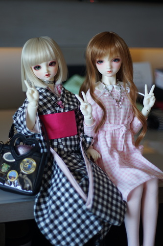
The hotel wasn't great, but wasn't bad either.
I'm not sure how many rooms gets for their block, but it's not enough. For most people, the tea party lottery results are the deciding factor for attending if they have to fly out. By this time, the block is full. During 2024 Dolpa, I got a few emails saying they were adding more rooms to the block, but that didn't happen for 2026. It seems like the correct method is to book a room on the block as soon as they go up and cancel later.
My hotel room did not feel premium. There were some parts of my room that looked like a landlord's special. Only one side of the bed had power outlets. The fire alarm flashed all night long in changing patterns. It definitely could have been much worse but it wasn't great either. Maybe I'm being spoiled by the hotels around Sakuracon.
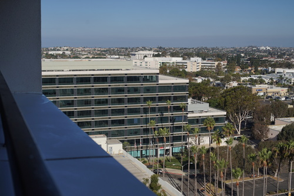
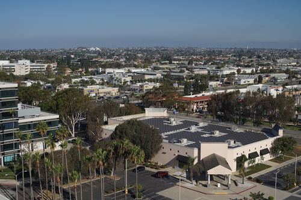
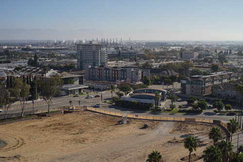
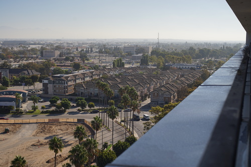
The room had a balcony though which was awesome!! I got to see my favorite thing outside of it: dirt pile!!!!!! If I was spending more time in my hotel room, I would have liked to have sit out there a little more.
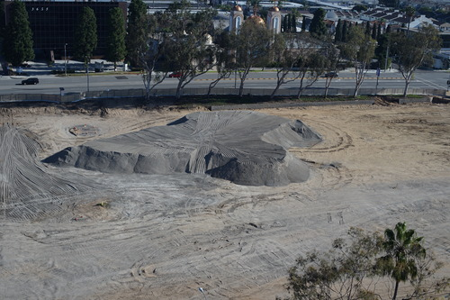
Luckily, the event areas downstairs did not feel shoddy. There was seating outside of the conference area where dollers were hanging out. A few people were also sitting in the hallway too, even if there was no seating there. The hotel lobby was mostly normies who were not there for Dolpa, but there was nothing stopping people from sitting out there too!
The hotel did have this one unmatching mirror in the bathroom downstairs, but that's the worst I can say
There were quite a few normies in the hotel but none of them said anything rude to me. For some reason, airline workers must enjoy this hotel a lot! There were times when I saw maybe 20 of them in the lobby together.
I had heard the hotel was next to a mall, but I didn't realize it was literally right across the street!! I think this was easily the largest mall I've ever been in. It kept going and going and I'm not even sure I walked it all. There is a grocery store called Mitsuwa Marketplace in this mall if you need to pick up some food. I got some yakitori there at the deli but I'm staying away from it next time. There's a few more food options in their marketplace which are hopefully better options.
After getting our badges, we saw there was a huge line into the open room. We chatted with Beamlette while we waited in line for something. Eventually they were let into the room and we learned it was for a panel. We almost went in when I read that it was for replacing doll eyes and big titty dollfie dream. Well... we stayed out and chatted some more!
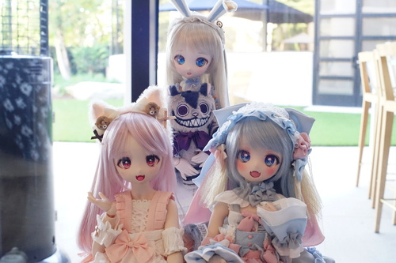
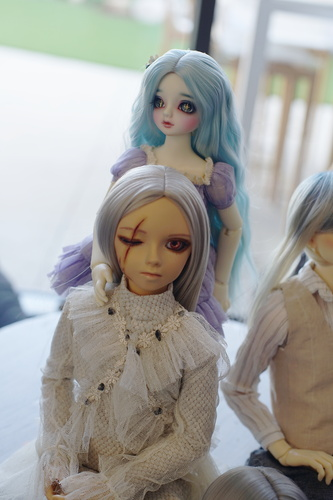
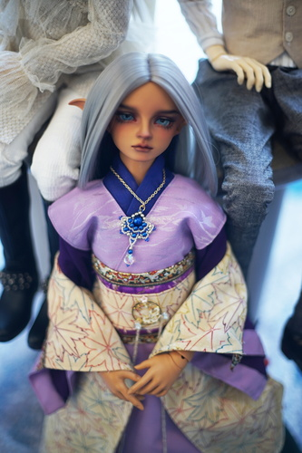
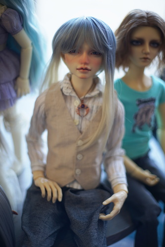
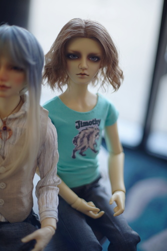
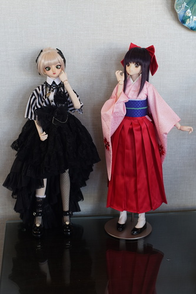
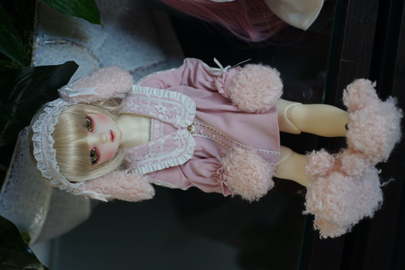
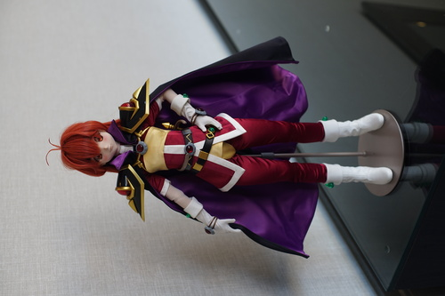
I saw someone with a DearSD and I asked if I could hold her! She wasn't the face I wanted, but I got to check out the jointing choices. The hands have inner arm one touch system. The feet do not have one touch system. There is a mobility joint on the thigh, but it appears to only be for sitting in the suwarrico pose.
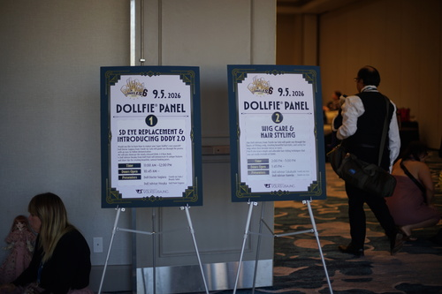
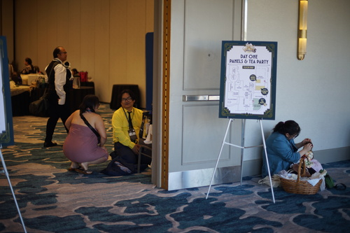
The open room was divided in two. On one side, there was a photo area and the Dollfie doctor.
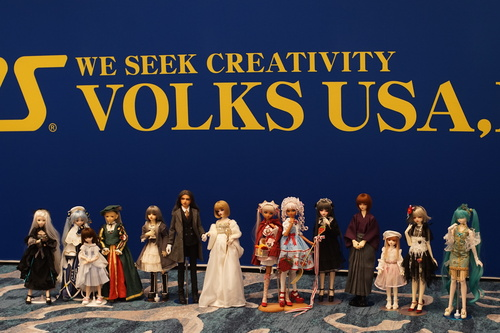
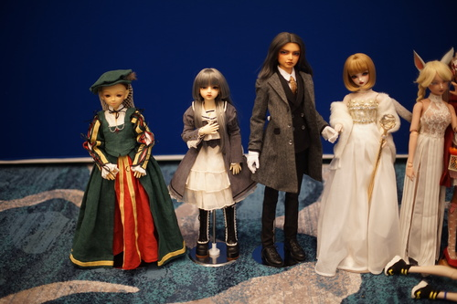
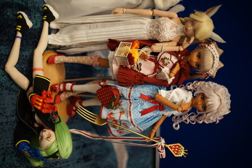
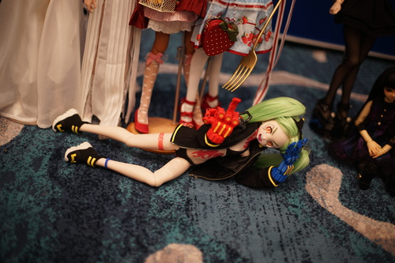
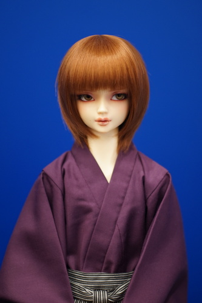
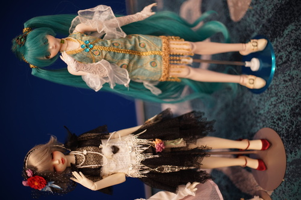
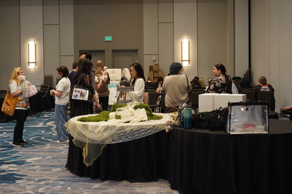
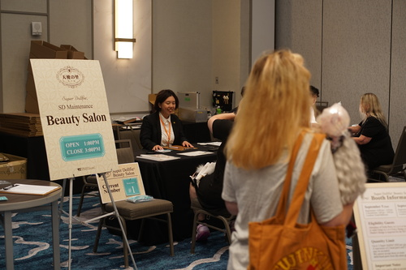
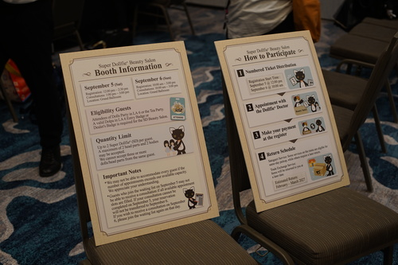
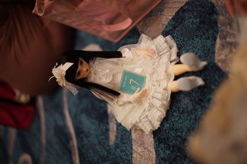
Momiji waiting in line for a trade exchange
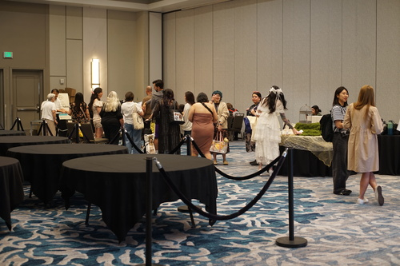
On the other side, there was a small version of the Sumika shop and the panel room.
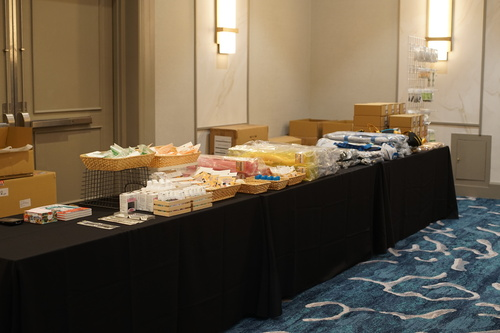
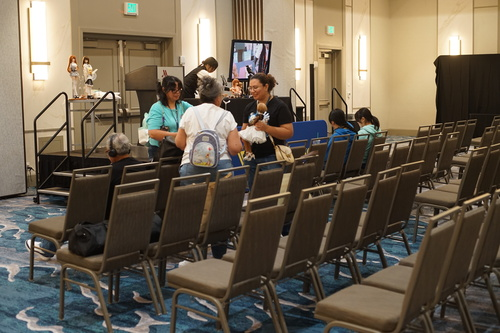
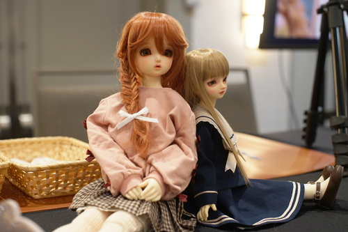
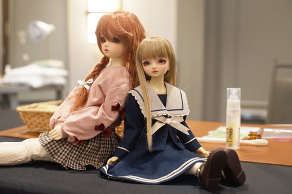
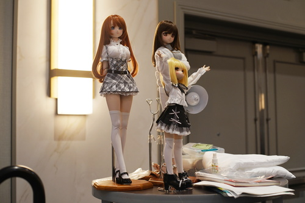
A while back, I was editing the DoA wiki and adding SDGrB Williams and I thought, is this the same head as SD13B Williams? Does he need a separate page? I thought and thought and I think I decided to make him his own page. But I realized, I am at an event full of Volks staff! Someone must know! I asked the staff at the registration desk. I was told to ask Alex!
I found Alex, and Alex said to ask Mikey. Ask Mikey?! I have to go all the way to the top!? Well alright... For Williams...
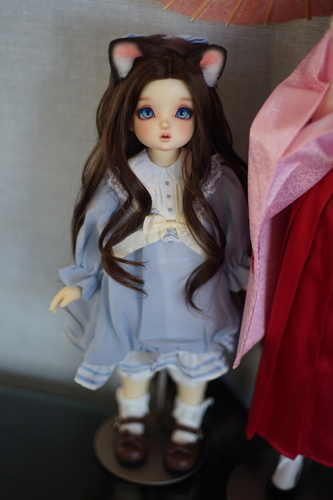
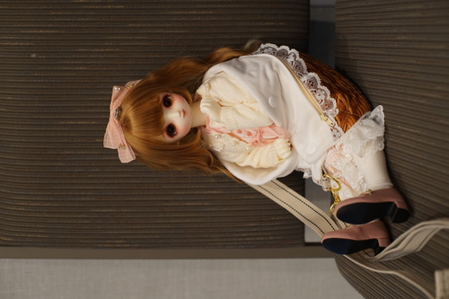
This little Nayu was stealing my heart every time I saw her
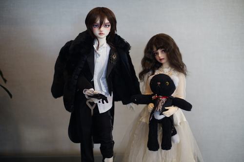
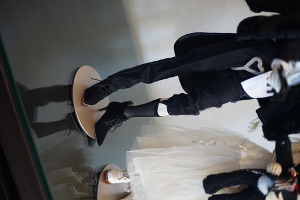
GARTERS OUT FOR DOLPA
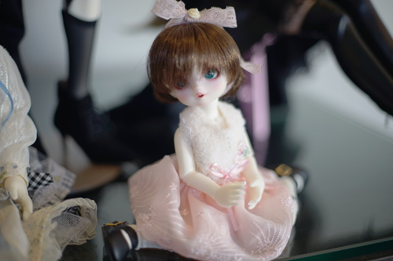
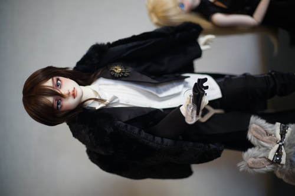
Did I mention I love F-101?
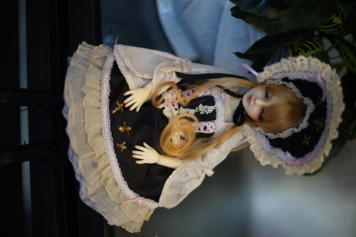
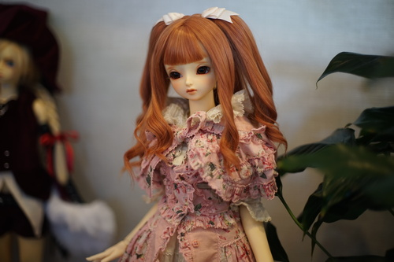
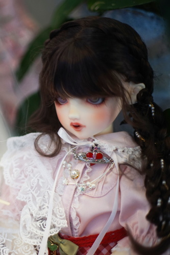
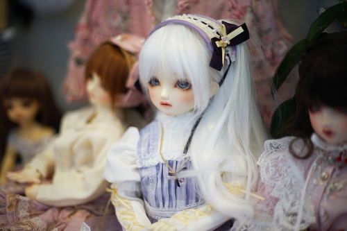
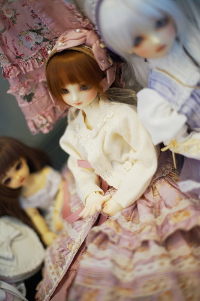
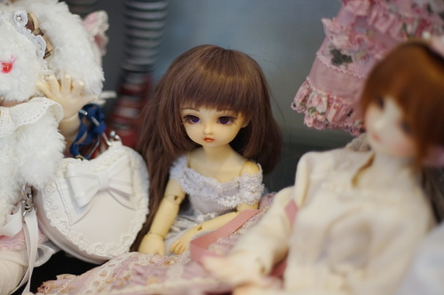
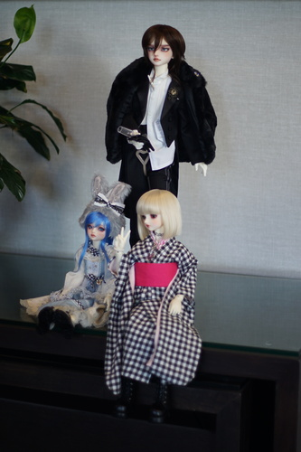
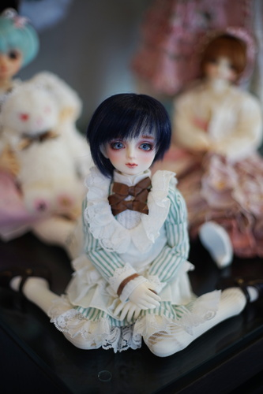
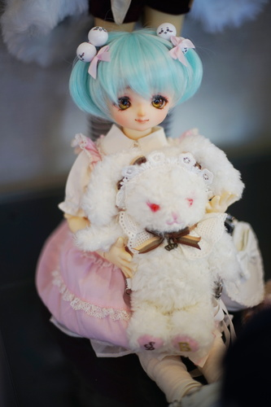
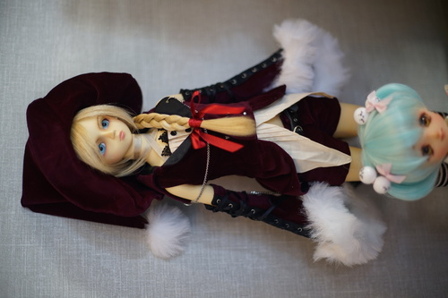
Magical Michael showed up midriff and all!
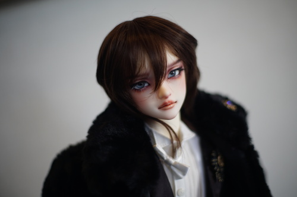
I love F-101 so much UGH!!!!
There was another panel on wig styling, but it started at 2PM and went to 3PM. The line for the tea party had already started by this time with the tea party doors opening at 3, so if you wanted a good seat, you'd have to skip this panel. The line was LONG too.
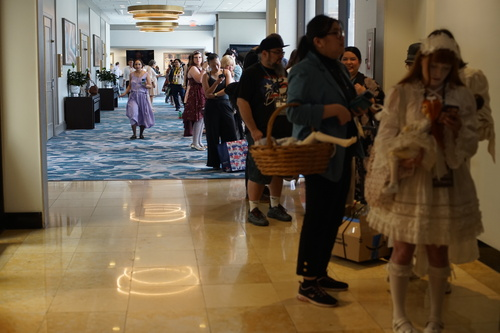
At the entrance, the staff checked your ID against their spreadsheet of attendees. Attendees were given bags with a thank you note, a green raffle ticket, and a lottery ticket for the one-off models. Companion ticket holders did not get the lottery ticket.
Linus, Sam, and I were about halfway back in the line but we easily managed to get 5 seats together and keep them until our 2 other friends arrived.
Volks must have heard the feedback on the lack of food at the tea party from previous years, because there was a lot of food and still food left over after the tea party! If you were coming for the spectacular tea, I'm sorry. They offered tea cups, tea bags, and hot water.
Companions are not able to enter the lottery for either the limited model nor the one-off models. There were no other limitations for companion ticket holders. They can enter the contests and the raffle includes them as well.
Rumor has it that only 20 of the event limited dollfie, SDGr Tae, were made. Linus loves Tae, so I entered for Tae on his behalf. The lottery for Tae was online before the event. Payment was also online. The winners got to pick up their dolls at the tea party. Unfortunately, we did not get to welcome Tae, but maybe next release!
One of the craziest parts of the tea party that it was entirely in English. The Japanese staff worked very hard to get through their English scripts. Some of them did speak English and others did not. There were people who could have acted as translators, but they chose to use English alone!
During the tea party, we grabbed Mikey very forcefully and questioned her about SDGrB Williams. She told me that there was an intention to be very similar heads, but he is not the same head as the SD13B release. I still don't know if they each need their own wiki page...
All of the Roaring 20's themed one off models were on display in a busy corner of the room. Their price tags said that tax was included.
1. SD Luna, PS Fair, Saifa, kagonotori, $1,150
2. SD Charlotte, PS Fair, Dolce, kagonotori, $1,280
3. Yo-SD Lieselotte, PS White, Rumina, pAge, $720
4. SDMB Oliver, PS White, Yui, pAge, $740
5. SDGr F-114, PS Fair, Kinoko, @37373doll, $1,280
6. SD13 DWC06, PS White, Yui, Calme, $1,020
7. SD16 Ami Ayase, PS Fair, aone, @37373doll, $1,360
8. SDGrB Cain, PS White, Dolce, yucca, $1,350
9. SD Megu, PS Fair, Ciera, hatidori_no_mori, $1,030
10. SD16 Emerald, PS Fair, Yui, †S-ETERNAL MAIDEN†, $1,360
11. SD17 Ludo, PS White, Luluco, yucca, $1,520
12. SD13 Elizabeth, Ciera, QUEEN'S DOLL, $1,430
13. SDGr Lorina, PS Fair, Luluco, QUEEN'S DOLL, $1,450
A new artist name has appeared!! Who is Dolce??
I hope all the dolls go to loving homes!
Volks ran two contests during the tea party. There was a best dressed owner contest and a best dressed Dollfie contest. I joined both without being on theme at all because there were freebies handed out to anyone who entered. A doll necklace was the gift for the Dollfie contest and a Genji print and Omamehan Kurochiku handkerchief was handed out for the owner contest. Beware though! If you join the owner contest, they have all the contestants come up on stage!
Linus took the owner contest seriously and bought a whole railroad engineer outfit! Unfortunately, he didn't win despite working all the live long day. Corgskee won!
Solveig did not sign up for me entering for her to get a participation prize.
For the Dollfie costume contest, the runners up were announced first. The owners of entries 1, 5, 14, 29, and 32 were brought on stage and congratulated.
The grand prize went to entry number 20!
The final and most exciting part of the tea party was the raffle! Each attendee was given a raffle ticket on entry. Two attendees had lost their tickets somehow and Volks kept asking people to check if theirs was missing so that they could be returned. Eventually, everyone had their ticket and the raffle started.
The first prizes were 15 Komame plushies. My friend, Sam, had been wishing very hard for one and even brought an outfit for her future Komame! She somehow was able to manifest a win. It was very impressive!
Volks brought 1 Hikari-Tenshi, 1 Ai-Tenshi, 4 Rei-Tenshi, and 5 Sei-Tenshi that were all sent home to new loving homes. I hope someday I'll be lucky enough to be given one! This time, my ticket was definitely jammed in the corner of the treasure chest.
My table was very lucky~ We won 2 Komame and a tenshi!
The two starlets meet.
Sometimes Volks brings big announcements on future releases but we didn't get any early secrets this time.
We did not finish it.
As each of us left, we were handed a doll sized patriotic hat as a gift. You were welcome to take the tea party specific decor with you as well.
PEACE PEACE
The snacks at the tea party weren't a full meal, so expect to go out to eat dinner after. My group of 5 went to Mumu Hot Pot in the mall. It was another slightly dystopian experience because you order on your phone and the ingredients are rolled out to you. It tasted really good though!
After dinner, we sat in the lobby together with our dolls, hoping people would stop by. We even had chocolate out! The winner of the One-Off Elizabeth walked past with her son and he was so sweet! Linus gave him a zine~
I needed to get my daily drawing in, so I drew Sam's Momiji and her new Komame on some hotel paper. It was glossy so it took pencil badly but the fountain pen ink pooled nicely.
She came back with her Elizabeth a little later and set her up! Another doller, @3dizbelts, also came out with his Regulus and Icon pair (non-canon) to take lobby photos.
We arrived a few minutes after opening at 10 and the line was already massive! Apparently, there had been 3 lines before the doors opened.
While standing in line, I noticed that there were 4 women carrying around non Volks dolls. I'm not sure if they didn't get the memo or if they were just rude, but they continued carrying their dolls the entire event and I did not witness Volks staff asking them to put their dolls away or cover them.
My favorite part of the shop was the Dealer's market of items brought in from Japanese Dolpa dealers. It was really fun to see what they were making.
The Sumika shop was PACKED and people were going through the stuff like crazy! I didn't find too many things I needed but Linus found a few. We actually broke a rule at the shop I wasn't aware of at the time. There's a rule of one of each item per purchase, likely to prevent scalpers. I wanted the same pair of shoes that Linus was getting for Solveig so we bought two!! I'm sorry Volks!!! I promise we're keeping both but I can't imagine Solveig taking hers off!!
Here's a few photos from after the storm had calmed:
Keep in mind that Volks charges tax on orders picked up or shipped within Califonia, and this is no exception. The tax rate within Torrance at this time was 10.25%. This applies to everything in the Sumika shop as well as for all the event limited dolls.
Every order is added to your VolksUSA account. They match your name and then confirm your email with you when you check out. I'm not quite sure what they do when you do not have an account. One account can buy multiple tickets to the event, so it's possible to not have one.
When you get your badge, you are also given 4 lottery tickets. You get one for each group of dolls available for lottery: Icon, D'Coord, Best Selection, and Dear SD. Your name isn't printed on anything, so you can use your sheets, not use your sheets, or give them away.
There were definitely people getting unused lottery tickets from others so they could stuff the box of the doll they wanted or enter for multiples. I didn't see rules against this, but on each lottery ticket, it states each person can win only one of each doll category. I saw one woman go up with her father to the winner's table after having his name called.
For every set of dolls except the Dear SD, the doll you enter for is the exact doll on display. Each have their own number.
You fill out both sides of the ticket, rip the customer copy side off, and then insert the ticket side into the box. You should definitely do your best to write your name clearly on your lottery ticket! Some people with either unreadable handwriting or difficult names to read for an English speaker were often identified by reading out their phone number in full.
An announcer on stage will start naming the winners of each item. The winner comes to the front, gives an employee their ID and the customer copy side of the lottery ticket. The employee confirms the name on the customer copy with your ID, then confirms the lottery ticket matches the customer copy. The employee then marks the staff only box on each sheet, then hands you back the customer copy.
The winner then walks over to the Sumika registers and pays for the doll. Volks also offers cardboard boxes to ship your doll home in for $4 more. The cashier then stamps the customer copy with a cute little Komame.
About 30 minutes after the announcement and after confirming all winners have come up to claim their win, the dolls become ready for pickup. You hand the customer copy to the employee, the employee hands the sheet to another employee, the other employee brings out the box of the doll you won with the winning lottery ticket attached to it. The first employee then unwraps the doll, shows you the doll's face, confirms your happiness, then wraps the doll back up again and hands it to you. The employee keeps both the lottery ticket and customer copy and throws them under the table.
You must be there to claim your doll in person. One winner of an Icon lost their win by not coming up and having been called for a couple times. I don't think it would be an issue if you left to go to the bathroom during the announcement, but be sure to check when you get back! They were given plenty of chances, but I did not notice that anyone was calling or texting the phone number that must be provided on the ticket. The abandoned doll had a new name redrawn.
Many of the prices on these dolls had "tax included" prices printed on their info sheets, then had the "included" part sharpied out, and a "+" added in front of tax.
On the Dolpa website, there is a schedule for the announcements of the winners. This was inaccurate to what actually happened, for those who are choosing flights out in the future. Icon was first, D'COORD was second but an on-stage lottery drawing, Best Selection was next, and Dear SD was after without the on stage drawing. The final announcment was the auction model.
This year's set is called Elevated Presence. Two new characters, Ines and Camila, were added, as well as romantic glance versions of Aisha and Nikki.
Each doll was priced at $890 each plus tax. Each were dressed differently, but all came with the same mix and match set.
51. MDD DDH-30 semi-white $630
52. DDS DDH-11 tan $640
53. DDB DDH-26 flesh $670
54. DDS DDH-24 flesh $640
55. MDD DDH-21 tan $600
56. DDB DDH-26 tan $670
57. MDD DDH-27 flesh $600
58. DDS DDH-23 tan $680
59. DD DDH-14 flesh $680
60. DDdy DDH-31 tan $700
41. SDC Renee the Black Cat $570
42. SD17B Ludo the Grey Tail $1350
43. SDMB Oliver the Smart Goat $570
44. Yo-SD Luna Galerie de l'esprit BONBON Fleur Bleu ver. $600
45. Yo-SD Lieselotte Galerie de l'esprit BONBON Fleur Rose ver. $600
46. SD Luna Galerie de l'esprit 2025 ver. $980
Luna's glittery faceup is very cute!
Each doll was priced at $790. The 10th Anniversary set were sold for ¥85,800 (tax included) in Japan. The models sold at this event each came with a patriotic hat which was also given away to each tea party attendee the previous day. They did not bring all the models from this release.
For this set of dolls, a set of display models were set out. The display models were not sold to the buyers and were left out until the end of the event. Unlike every other lottery, the entries for each model were put into one box, with multiples being available for each. Volks did not tell us how many were available until the announcement of the winners. There were a total of 30 and I've listed the quantity sold for each.
1. Nao (3)
2. Nayu (6)
3. Miyo (7)
4. Miyu (8)
5. Leo (2)
6. Mai (2)
7. Mel (2)
At Dolpa LA 5, hors was unable to secure a DSD Nayu. Everyone cried for her loss, but we came together 2 years later to rig the lottery so she could win her very own Nayu!
I've become a little fond of Nayu over the last few years~ I've wanted a DSD for a long time and I think she's one of the best heads they have for the Dear SD body! A lot of their classic heads are perfect for it.
Last time, the DSD each had their own box to put your ticket in. Before the con, I was a little sad I couldn't also enter for a DSD, but HORS NEEDED HER NAYU!!! The night before, we decided our tactic would be to put a ticket in each box rather than fill one box. With this tactic, we also opened the possibility of winning 4 Nayu. I thought, well actually, I would be pretty happy if I got to bring home a Nayu as well! Now if we won 3 or 4... That would be a problem!
All four of us filled out our tickets with our own names and put them in the Nayu box. I put a little heart next to Nayu's name on mine for good luck~
They were short on time, so they did not wait for each winner to come up to the front. Instead, the names were just read out quickly.
My little heart worked! My name was called! I wasn't excited for myself yet! Hors was getting her Nayu! Immediately after, her name was called. I WAS GETTING MY NAYU TOO!!! Luckily, no one else in the group had their names called for Nayu. There was a small scare when someone had not claimed their Nayu and a redraw was threatened. In the end, our group left with exactly two Nayu, the perfect number.
At 3PM, the winning bid was announced to be $126,900. The winner was not announced.
Same as last year, no charity was announced, so we will assume this is benefitting Volks. The amount is getting scarily high at this point. I'm nervous about how bad the bidding war will be in 2028.
Volks brought back tables for domestic dealers at Dolpa! Unfortunately, they announced the applications really late so a lot of people didn't have a ton of time to prepare.
Mew's
Mew's
Mew's
Mew's
Turquoise D Shop
Heliogabalium & Constants
Heliogabalium & Constants
Heliogabalium & Constants
Heliogabalium & Constants
aurum79 & 69Resin
aurum79 & 69Resin
aurum79 & 69Resin
aurum79 & 69Resin
aurum79 & 69Resin
Miracle Sea & Twig by Twiggy
Miracle Sea & Twig by Twiggy
Miracle Sea & Twig by Twiggy
Miracle Sea & Twig by Twiggy
Cor Leonis BJD
Cor Leonis BJD
Lunadollia
Lunadollia
Lunadollia
Lunadollia
Lunadollia
Lunadollia
Lunadollia
Mota Doll's Clothing
Mota Doll's Clothing
By the time I got over to the game area, the Super Dollfie Raffle Drawing had already been completed.
Linus and I tried for the B-Grade HG Glass Eyes. He won a pair of 16mm light blue eyes and I won 16mm cadet blue eyes. I need brown!! Nooooo!! None of my friends tried it so I didn't get to trade with them. I really should have asked around the sitting area if anyone was trading.
Make sure to bring cash if you want to participate! They don't accept anything else.
There was a cheki booth where a staff member could take a photo of you, your doll, or you and your doll with an Instax Evo and print it for you to decorate.
They had a table full of stickers and POSCA markers for you to use. This was completely free, but I think you may be limited to only one print per person. On my second photo, the staff member marked my badge.
I had the staff take a photo of Haupia and I and another photo of Linus and I together~ This was so much fun!! I really enjoyed this booth and I wish I had Hina and Solveig out to take photos with!
#SHIBUYAMELTDOWN
There were tables in front of the stage where lots of owners gathered. It was crowded!
There were two photo spots, one for the VolksUSA 20th Anniversary celebration and another giant blue Volks background.
Once all the dolls were lined up, it was too crowded to take photos!
Even Gakupo is here!
Yes, I asked her to strip her Sakaki for me and yes, his torso was gorgeous
BEAUTIFUL HANDS ON HIM TOO
Even Linus can recognize a Victorique fullset!
Probably not 2 non default Victorique without difficulty... but he got it.
While we were waiting for Volks to bring out our auction winner, a team member brought out a number of lost and found things! A tshirt, a lost shoe... HAUPIA'S SHOE??? I called hors immediately and confirmed Haupia was half shoeless! My princess's glass slipper is safe with me~
Someone had also ditched their SD Maki's empty box in the women's restroom?? Oops??
I did not need any services from the Dollfie Doctors this year, but on Sunday, there was an announcement that the doctors were ready to see walk up patients with no one in the waiting room.
Some people forgot or didn't read instructions, but you must print the application form at home available on their website to utilize these services. Do not forget your paperwork!!
Official Volks goods and gift
Purchases from the Sumika Shop and games area
Sam was so nice to give me a copy of doll sized Volks news and a "Dealer's pass" pin! Hors gave me a copy of tiny Volks News as well!
Items from other attendees and Haupia's lost slipper
Solveig got a set from lululy_lu and has paired it with Volks genuine leather booties.
My favorite part of the haul will be in a box opening near you soon~
I was happy to see a lot of people chilling and chatting in the event spaces! It was wonderful to see so much space to just hang out with others who also love dolls. But, I still did not find a room party!!
I'm so sad I have to wait to hold my Nayu! I only got a small glimpse of her and now I have to wait days to see her again. I miss you...
Having the con end on Sunday on what I assume is Labor Day weekend every year sucks. There is a USPS location in the mall, but USPS is closed. FedEx seems to be the best option to get your new dolls shipped home, and the nearest open location was a mile away. I'm not sure how to fix this one. I understand why Volks won't ship them back but it is a struggle to get dolls back home.
My biggest complaint is that Volks does not give us much notice on a lot of things. I wish they would give us more forewarning for contest themes, vendor applications, etc. It was also a little mean to put a panel during the line up time for the tea party. Please schedule this panel an hour earlier!
For next time, I want to stay Sunday night. I wasn't able to bring Hina out on Sunday at all because I needed her packed in my bag checked at the hotel. If I didn't, I was going to have to carry her through the mall after Dolpa closed and before leaving for the airport. I also wonder if I could have found a way to bring Nayu home and shipped her box back with my clothes or something. There wasn't enough time to think about it!
If you love Volks, I highly recommend going, espcially if you can get into the tea party! Sunday was still a lot of fun, but I'd have to think harder about making the trip out to LA if I did not get to attend the tea party. The event was so much fun and I loved being surrounded by fellow Volks fans.
If you don't love Volks, you will after you attend this. You will probably leave with a Volks doll.
I would love to go again. Please rig the tea party lottery for me please~ ;3 No matter how much I hate flying and LA and flying to LA, I can't wait for the next LA Dolpa!